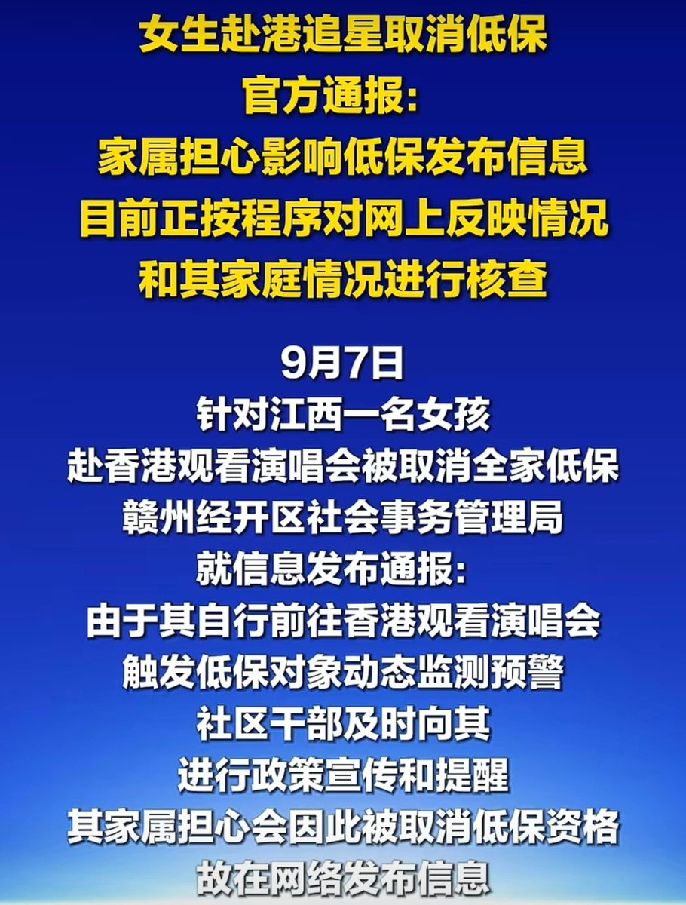
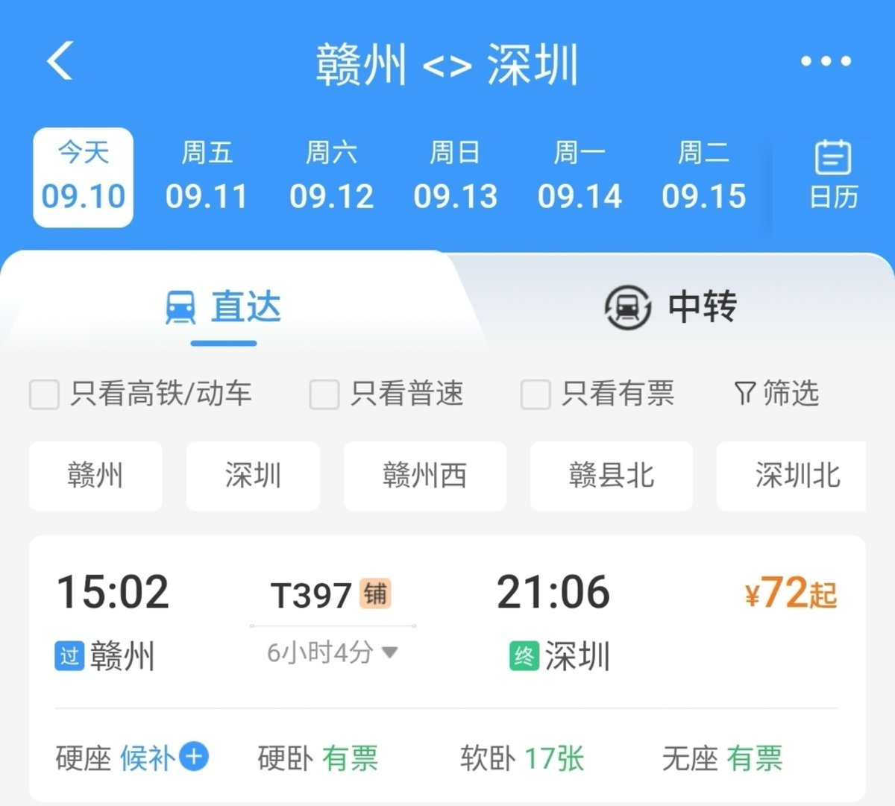
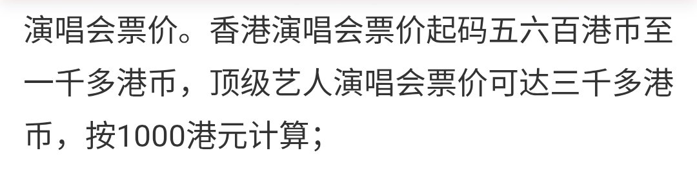

奶昔🥤
@realNyarime
低保是按户算的，按理说领了低保就应该被限高，这样连触发低保的机会都没有
不限制，一方面是保障人权，另一方面是一旦低保户触发大数据预警就能取消低保资格
农村户口转城市户口后就转不回去了，很多事情都是不可逆的，既然能去演唱会说明已经脱贫了，低保是为了生存而不是生活



不包番茄籽的番茄
@__fanqie__
这个赴港追星怕触发低保的，我大概给你们算下过去最少多少钱。
众所周知，深圳站边上就是罗湖口岸，你可以坐T397从赣州一路坐过去，来回72¥*2=144¥，然后在边上买点小零食方便面满打满算30¥，住宿的话就躺在什么公园长椅，或者找个网友家的客厅留宿一晚上就可以了 https://t.co/nollkysQj3